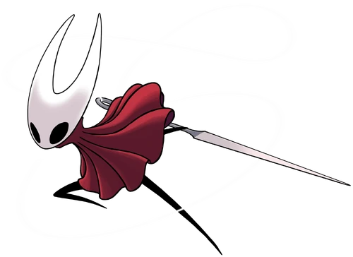
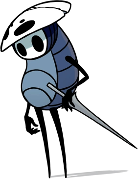

Aliados y Enemigos del Reino

Hornet
La Protectora de Hallownest. Una guerrera rápida y letal que porta una aguja. A menudo te desafiará o te guiará indirectamente.

Quirrel
Un viajero melancólico que ha regresado al reino. Lo encontrarás en múltiples lugares reflexionando sobre el pasado de Hallownest.

Zote el Contemplador
Un "gran" y molesto guerrero que afirma ser legendario. Rescátalo (o déjalo) y escucha sus tediosos 57 preceptos.